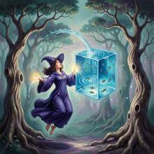

Entity Layout — Please generate a painting: a female wizard floating in mid-air, summo
Please generate a painting: a female wizard floating in mid-air, summoning a huge cubic mass of water with her hands, with a distorted forest in the background, in a surrealist style.

Judge — Direct
- PASSEntity Layout - Three-Dimensional Space — The image shows a female character in a wizard's hat and robe positioned in the center of the frame, with her feet off the ground, indicating she is floating in mid-air. The background consists of a forest with trees that have gnarled, twisted trunks and branches, fitting the description of a 'distorted forest'.
- FAILStyle — The image is rendered in a painterly, fantasy illustration style. While the subject matter is magical, the artistic execution does not align with the specific visual characteristics of the surrealist art style, such as dreamlike logic or bizarre juxtapositions of unrelated objects.
- PASSAction - Hand (Character/Anthropomorphic) — The female wizard has her hands outstretched towards a large block in front of her. Her palms are open, and there are light effects emanating from her hands, visually representing the act of summoning. The hands are depicted with five fingers each and appear anatomically sound.
- PASSAttribute - Shape — The mass being summoned by the wizard is a large, translucent block with clearly defined edges and faces, forming a cuboid or cubic shape. It appears to be made of ice, which is the solid form of water, and has water dripping from it.
Judge — Continuum
- PASSEntity Layout - Three-Dimensional Space — The image displays a female character dressed as a wizard, positioned in the center-left of the frame. Her feet are not touching the ground, indicating she is floating in mid-air. The background is a forest with trees that have gnarled, twisting trunks and roots, fitting the description of a distorted forest.
- PASSStyle — The painting depicts a fantastical and illogical scene: a woman floating while conjuring a cube of water filled with fish in a forest, which aligns with the bizarre and dream-like nature of surrealism. The style of painting is illustrative and fantastical.
- PASSAction - Hand (Character/Anthropomorphic) — The female wizard has her hands outstretched, one on each side of the cubic mass of water. Light emanates from her palms, and water splashes around them, indicating the action of summoning. Both hands are clearly visible and depicted with five fingers each, with no anatomical distortions.
- PASSAttribute - Shape — The image prominently features a large mass of water contained within a transparent, perfectly geometric cube shape. The cube has clear edges and faces, and contains liquid water with ripples on the surface, along with several small fish swimming inside.
What the agent did
Thinking
Need to generate an image. User asks for painting: female wizard floating mid-air, summoning huge cubic mass of water with her hands, distorted forest background, surrealist style. Per policy: use flux2-klein, no seed, no steps/guidance. Generate → inspect → edit loop, mark best. Let me craft a detailed visual prompt.
Step 1 — `generate_image`
{
"model": "flux2-klein",
"prompt": "Surrealist oil painting: a female wizard in flowing indigo robes floats levitating in mid-air, arms outstretched with glowing hands, summoning a colossal perfect cube of transparent blue water suspended before her, small fish and ripples visible inside the cubic water mass, streams of water arcing from her palms into the cube. Behind her, a distorted dreamlike forest with impossibly twisted, melting trees bending at impossible angles, warped trunks and elongated canopies, misty teal and violet atmosphere, dramatic rim lighting, surrealism in the style of Magritte and Dali, painterly brushstrokes, mysterious glowing particles in the air."
}Result img_0

Thinking
The image looks quite good: female wizard floating mid-air with hat, summoning a cubic mass of water with fish inside, water streams from hands, twisted forest background, surrealist painterly style. All elements present: - Female wizard ✓ (witch hat, indigo robes, floating) - Cubic water mass ✓ (transparent cube with fish) - Hands summoning ✓ (glowing hands, water arcing) - Distorted forest ✓ (twisted trees) - Surrealist style ✓ Minor critiques: the cube could be "huge" relative to her — it's fairly large already, bigger than her torso. Composition is good. This is good enough. Mark best and stop.
Model
The result has all the requested elements. Let me evaluate: - **Female wizard floating mid-air** ✓ — levitating, barefoot, indigo robes and pointed hat - **Summoning a cubic water mass with her hands** ✓ — a large transparent cube of water with fish inside, streams of water arcing from her glowing palms into it - **Distorted forest background** ✓ — warped, twisting trees with gnarled trunks bending at impossible angles - **Surrealist style** ✓ — dreamlike misty atmosphere, painterly brushwork, glowing particles The composition is strong and nothing is clearly wrong, so this is a good stopping point.
Step 2 — `mark_best`
{
"image": "img_0",
"reason": "All prompt elements present and correct: floating female wizard, cubic water mass with fish summoned from her hands, distorted forest, surrealist painterly style. No edits needed."
}Model
The painting is complete and marked as the final result. It captures everything you asked for: - A **female wizard** in flowing indigo robes and a pointed hat, levitating barefoot in mid-air - A **huge cubic mass of water** suspended before her, transparent with small fish swimming inside, being fed by streams of water arcing from her glowing hands - A **distorted forest** of twisted, gnarled trees bending at impossible angles in the misty background - A **surrealist style** with a dreamlike teal-violet atmosphere, painterly brushstrokes, and floating glowing particles The first generation came out well-composed with all elements correct, so no further edits were needed.